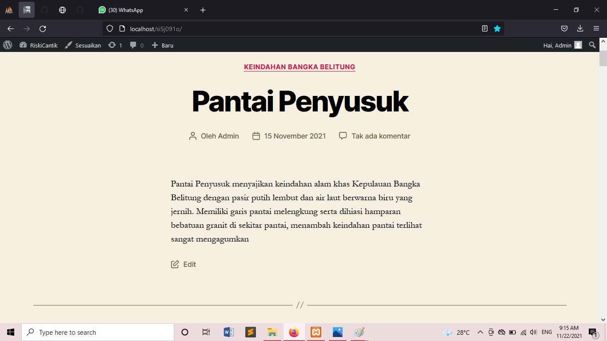
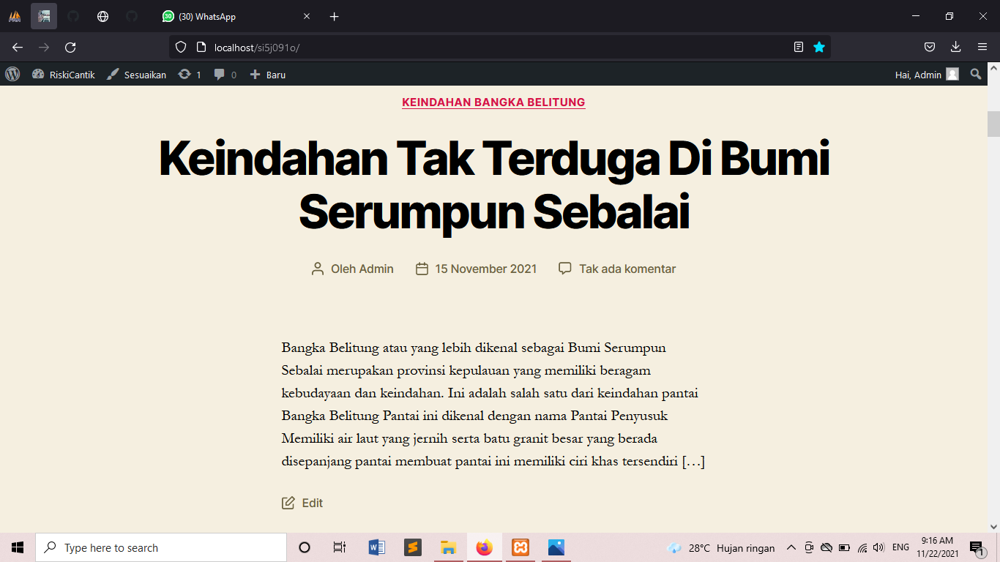
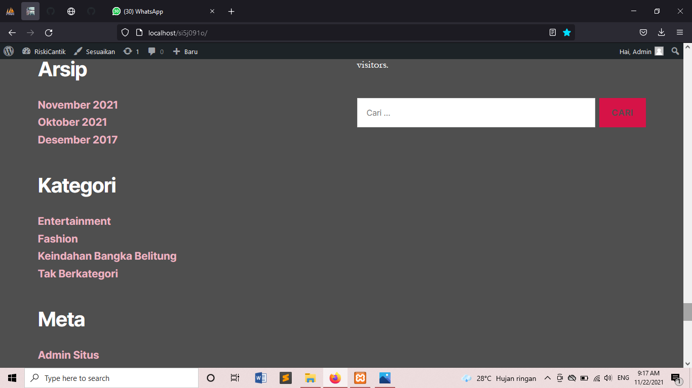

NIM: 1922500091
Nama: Riski Tassyah Audifa
Kelompok: SI5J
Hasil atau kesimpulan dari pertemuan adalah:
- materi pertemuan ke 4 merupakan materi uts
- Tahap pertama , buka xampp control panel dan jalankan apache serta mysql
- Tahap kedua , pada browser buka alamat http://localhosat/si5j2122o/ dan tab baru buka alamat http://localhosat/si5j2122o/wp-admin
- Tahap ketiga , pada halaman login silahkan isi username : admin dan password : admin
- Menambahkan pos baru dan laman pos baru
- membuat kategori pada post agar lebih memudahkan pembaca menemukan isi tulisan
- Mengubah Tema pada blog
- Mengubah Widget agar tampilan lebih menarik dengan meng instal classic-widget
- mebuat postingan yang dapat dibuka pada tanggal yang sudah ditetapkan
-
- Mengubah menu pada bagian header dan footer
berikut tampilan konten yang telah diposting:



